V2.3
ArcticWeb

User Manual
V2.3
User Manual
|
Mads Bentzen Billesø |
|
|
Danish Maritime Authority |
|
|
Maritime Analysis, Technology and business development, e-navigation |
|
|
Tele: |
+45 9137 6329 |
|
E-mail: |
|
|
|
|
|
Carl Jacobsens Vej 31 |
|
|
2500 Valby |
|
|
Tele: |
91 37 60 00 |
|
Fax: |
91 37 60 01 |
|
Web: |
|
ArcticWeb - an effort to improve safety of navigation in the Arctic.
ArcticWeb is combining:
AIS data collected by national and commercial satellites and base stations in the Arctic region.
GREENPOS and COASTAL CONTROL reporting.
Coordinated Voyage through the sharing of routes and schedules.
Sharing of routes and schedules with Arctic Command.
Ice charts from Danish Meteorological Institute (DMI).
Inshore ice reports from Danish Meteorological Institute.
Satellite images from NASA provided by Danish Meteorological Institute.
Navigational warnings from Arctic Command and Danish Maritime Authority.
Weather forecasts from Danish Meteorological Institute including weather forecasts for a planned route.
Forecasts for ice, current and waves provided by DMI and Defence Centre for Operational Oceanography (FCOO).
The platform is intended for use by:
Ships
Shipping companies operating vessels in the area.
Arctic Command
Other shore authorities
Any
Recommended browsers are Firefox (latest), Safari (latest) or Internet Explorer 10 (or 11). Google Chrome may be used, but some users have encountered some chart problems when using Chrome.
Other working browsers: Internet Explorer 9. The amount of data transferred over the internet connection will however be higher than with recommended browsers.
All communication between the ArcticWeb web application and the DMA e-Navigation servers are performed using HTTPS protocol on port 443.
JavaScript must be enabled in the used browser. See if you have JavaScript enabled and how to enable it at this internet site: http://enable-javascript.com/
Cookies must be allowed, at least for the domain arcticweb.e-navigation.net, core ArcticWeb functionality will otherwise not work.
See more at:
Internet Explorer: http://windows.microsoft.com/en-us/windows-vista/block-or-allow-cookies
Firefox: http://support.mozilla.org/en-US/kb/enable-and-disable-cookies-website-preferences
Chrome: https://support.google.com/accounts/answer/61416?hl=en
Safari: http://support.apple.com/kb/ph5042
The browser cache is utilized for caching web resources (HTML, CSS and JS files) as well as all ice chart data and other data fetched from DMA e-Navigation servers. This will lower the amount of data transferred over the internet connection. To make best use of the browser cache it is therefore recommended to:
Always use the same computer and browser for ArcticWeb.
Not to clear the browser cache.
Not to clear hosted application data/offline web application data in the browser.
At first login an initial download of approximately 1 MB is made (basic chart and other data). A low cost connection may be preferred for this.
After first login and provided the cache is not cleared, ArcticWeb data volumes will be approximately 100 KB per hour when logged in (primarily from the regular update of AIS targets).
Ice chart, iceberg and forecast download sizes are given in theirrespective windows. They will typically be between 20 and 250 KB each. Please note that an ice chart, iceberg or forecast is cached once downloaded by the browser and thus not fetched from the server again on next download click, unless the browser cache has been cleared.
Satellite images are downloaded as image tiles depending on the zoom level - the higher the level the more detailed are the downloaded image tiles. The data volume used is thus dependent on the map usage while viewing the satellite image. Already downloaded images are cached in the browser until no longer needed.
On the front page Ice Charts in pdf format, weather information and information on Safety of Navigation is available. In the future more information will be added.
Click on Vessels or Log in as user.
If you are not a registered user, you may request access by clicking Request Access (only first visit on page). You will be prompted for required information to create an ArcticWeb user. When a user has been created, you will receive an email with your new user credentials.

Log in with user name and password.
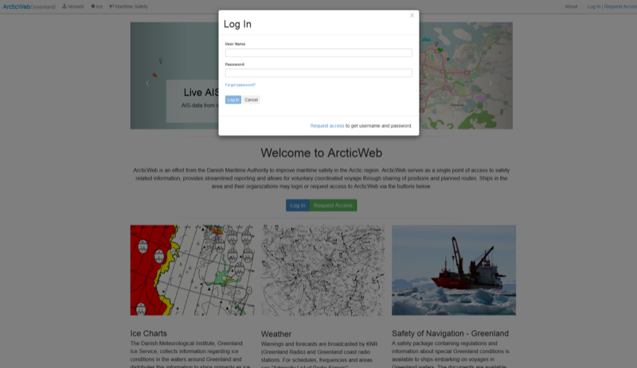
If you have been registered as user in ArcticWeb but forgotten your password, click Forgot password and enter the e-mail address you have registered. Password will then be forwarded.
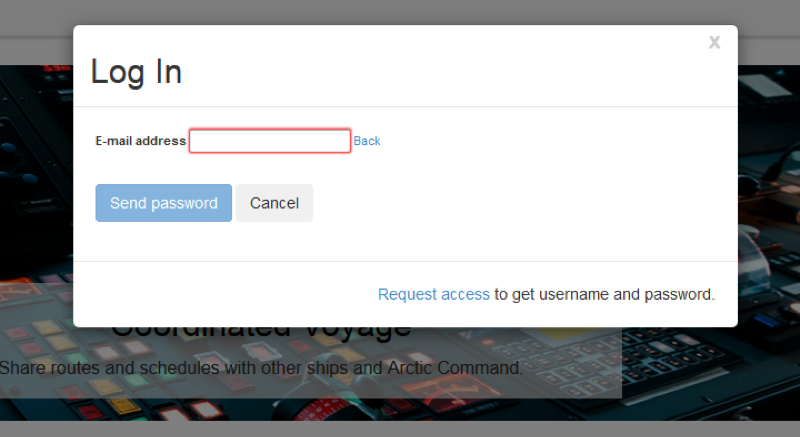
When logging in, user is linked to own vessels AIS target (marked by green ring). Vessel positions are updated every 15 minutes. Vessel positions obtained from satellite may however be older due to the time between satellite passings (recent analysis have shown that in 95% of the time, positions are updated at intervals less than 2 hours, in 99% of the time less than 6 hours.
It is possible to see positions of all other vessels in the Arctic Region equipped with an AIS transponder.
Click Zoom all Arctic to return to overview
Click Zoom to Your Vessel to zoom to own vessel
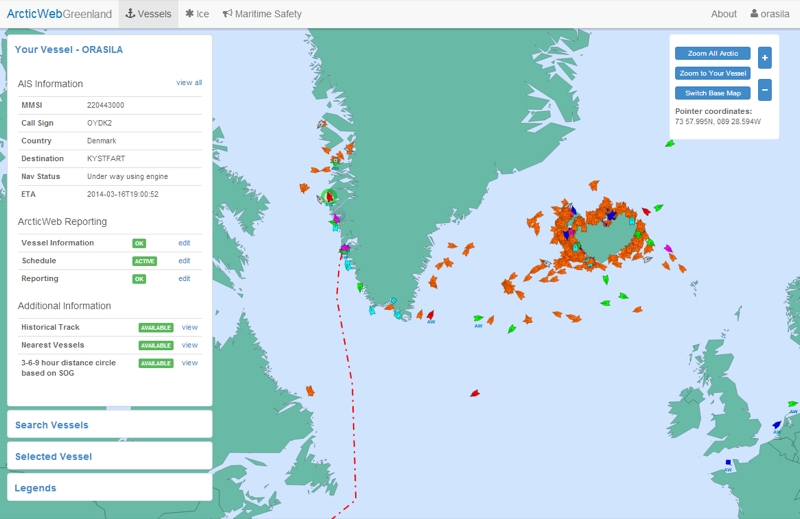
Click Switch Base Map to change from basic chart (Single Vector Map) to full OpenStreetMap. Data volumes are increased quite a bit from basic chart to the full OpenStreetMap and it may be slower to use the OpenStreetMap.
If using Chrome as your browser you may turn on Hardware acceleration to improve performance.


Own vessel is marked by green ring when logged in.
The vessels page shows primarily AIS data, i.e. other vessels in the area. On the left are a number of possibilities:
Your Vessel:
- AIS Information: Basic information obtained from AIS.
- ArcticWeb Reporting:
Vessel Information: additional information expanding AIS information.
Schedule: sharing of schedule and routes with other vessels and authorities.
Reporting: send Greenpos reports to Arctic Command and Coastal Control to Aasiaat Radio
- Additional information:
Historical Track.
Nearest Vessels – the distance in nm and time from the 5 vessels nearest to own vessel. “Nearest” is based on the time to reach your vessel from other vessels in the area and is calculated by using ArcticWeb Max Speed if this exists, if not we use Service Speed and if that does not exists then we use SOG.
3-6-9 hour distance circle based on SOG – portrayal of the distance own vessel can reach in 3-6-9 hours based on present SOG.
Search Vessels: search other vessels by name or MMSI.
Selected Vessel: Information on selected vessel.

Legends: Explanation of symbols and coloring (vessels, ice, etc.).
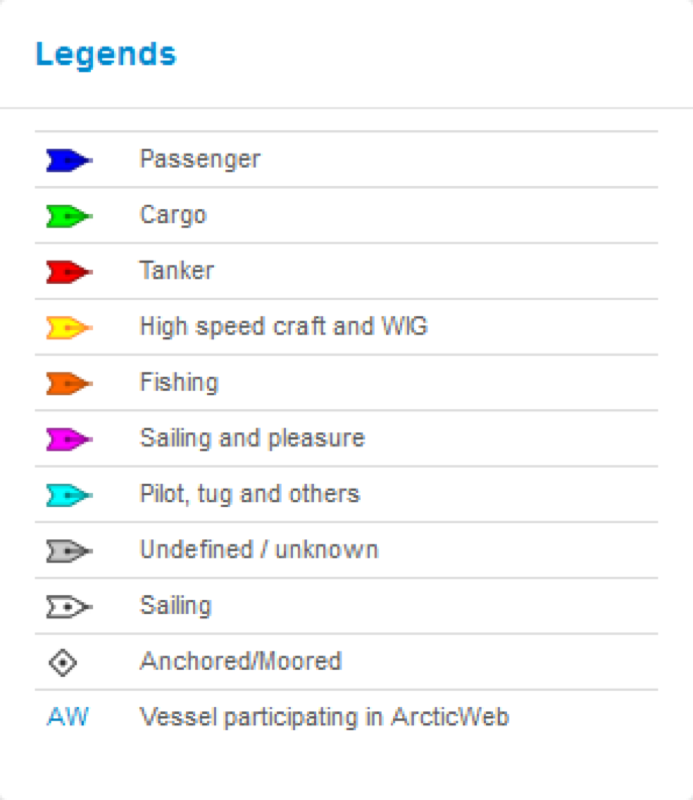
By clicking the view button on Historical Track the past track of the vessel is displayed. Positions are obtained from satellite and are updated every 1-6 hours, so the track may look a little bumpy and may cross over land.
Click the Hide button on Historical Track to hide past track.
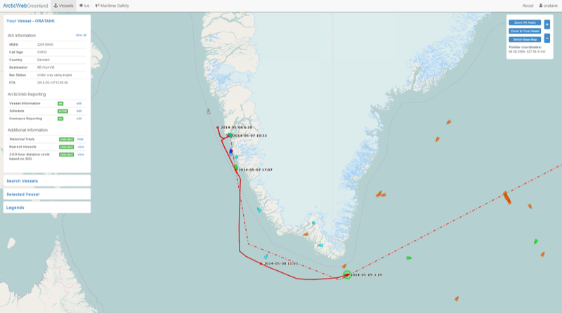
By clicking Nearest Vessels view the distance in nm and time from the 5 vessels nearest to your own vessel are displayed. “Nearest” is based on the time to reach your vessel from other vessels in the area and is calculated by using ArcticWeb Max Speed if this exists, if not we use Service Speed and if that does not exists then we use SOG.
Click Hide button on Nearest Vessels to hide lines.
In later versions it will be possible to search and see distance to nearest vessel with medical personnel on board, distance to hospitals, helicopters, etc.

By clicking 3-6-9 hour distance circle based on SOG view the distances own vessel can reach in 3-6-9 hours based on ArcticWeb Max Speed if this exists, if not we use Service Speed and if that does not exists then we use SOG.
Click the Hide button on 3-6-9 hour distance circle s to hide circles.

By clickingSelected Vessel, information on selected vessel is shown.
Vessel is selected by click on target in chart area or searching vessel by name or MMSI in Search Vessels menu.
Selected vessel is marked on chart by red brackets.

By clicking view all in Your Vessel or Selected Vessel menu it is possible to see all available information on your/selected vessel.

In the bottom of the View All window it is possible to search vessel at MarineTraffic.com, see pictures and other available data.

By clicking view button on Historical Track in Selected Vessel menu it is possible to see other vessels past track.

Extra information on the map such as nearest vessels, distance circles, historical track and other routes than your active route can be removed from the map again in one click. Both the Your Vessel and Selected Vessel views contain an Extra Information on Map section in which the clear link can be clicked.
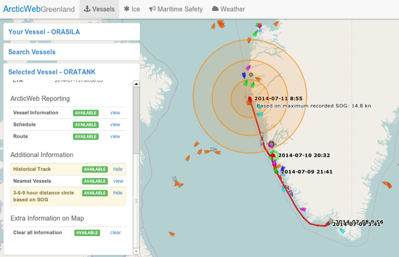
The list of Ice Charts is by default shown.
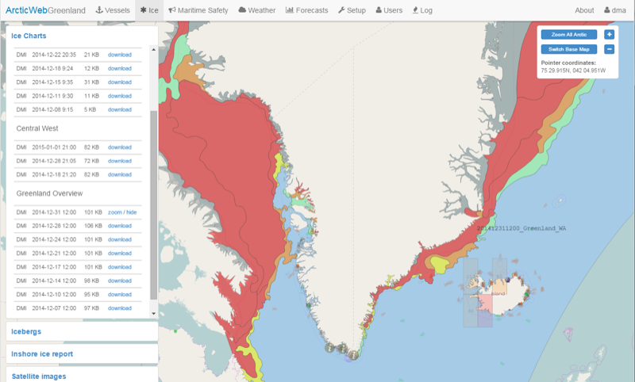
All available Ice Charts are listed, sorted by area; most recent Ice Chart first.
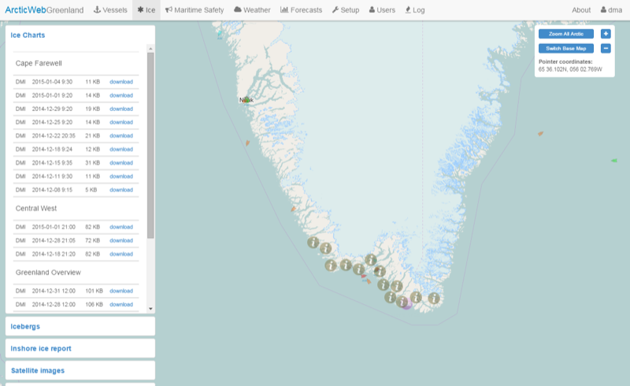
It is also possible to choose Icebergs
All available Iceberg charts are listed, sorted by area; most recent Iceberg first.

Ice chart legends are shown in the legends menu.

Ice Charts and Iceberg charts are downloaded by clicking download. File sizes are indicated to make it possible for the user to choose whether or not to download the chart and thereby minimize vessels data usage. Once downloaded an Ice Chart / Iceberg chart is cached by the browser and thus not fetched from the server again on next download click, unless the browser cache has been cleared. When an Ice Chart or Iceberg chart has been downloaded, the download button changes to zoom. Click zoom to zoom to chart area. Click hide to hide chart.
Details for Ice areas are shown in the left menu by clicking colored Ice areas on chart.

Details for an Iceberg are shown in the left menu by clicking on the Iceberg on chart.

After having chosen the Ice tab in the top menu, it is possible to choose the Inshore ice report window on the left. The Inshore ice report window contains information on the data provider, a list of locations for which observations are available and in the bottom some extra information from the data provider. To see one or more observations you may click view or choose an inshore ice report icon on chart.
Reports are currently only provided by the Danish Meteorological Institute in Danish.

One or more inshore ice report observations are shown when you click an inshore ice report icon on chart.

After having chosen the Ice tab in the top menu, it is possible to view satellite images positioned on the map on their actual geographical location. Each satellite image covers an area of the Arctic region. The satellite is often not able to obtain a full image for the intended region, and images may as a consequence become smaller than the desired area. Several images may be available for each region but on different days and time of day.
NB. Images are supplied in ArcticWeb in a fully automated fashion, which does not allow for any manual removal of images that are distorted or that contain little image data.
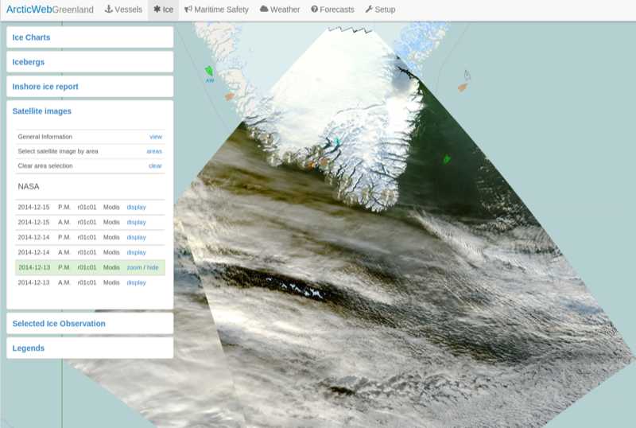
General information about satellite images is shown when you click the General Information link in the Satellite Images window.

The list of available satellite images may be long and therefore hard to choose from. You may filter this list to only contain satellite image entries for your desired region. The Satellite images windows contains the Select satellite image by area link - click this link and then choose the desired region on the map.

You may display a satellite image by clicking the display link in the Satellite images window. You may remove the satellite image from the map by choosing hide. Zoom to the displayed image by choosing zoom.

By clicking the Maritime Safety tab in the top menu, the Maritime Safety Information window is opened on the left.
Here all active Navigational Warnings are listed, sorted by number.
All Maritime Safety Information for the area is displayed by purple MSI symbols.
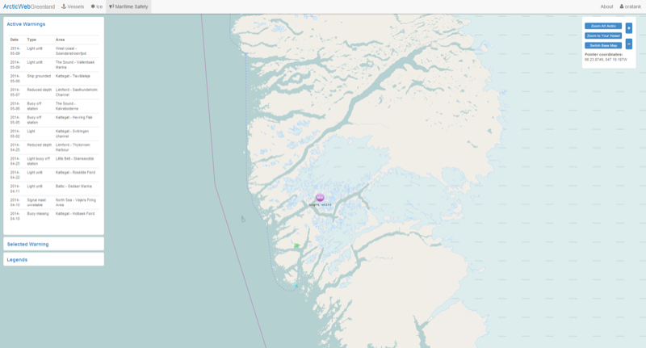
By clicking MSI symbol in the chart area or under the Active Warnings in left menu, details are shown.

The GREENPOS system applies to all ships on voyages to and from Greenlandic Waters and inside the Greenlandic Continental Shelf or EEZ. The ships are to report weather information and their position, course and speed every 6 hours.
The COASTAL CONTROL system applies to all ships greater than 20 BT on voyage to and from Greenland ports and places of call. The ships are to report their position, course, speed and persons on board at least every 24 th hour.
Additional information may be required depending on the report type send. See ‘Mandatory Ship Reporting Systems’ document found on front page for report types and when to send them.
Click edit button under Reporting in the left menu. Here it is possible to enter and send reports to Arctic Command (Greenpos) and/or Aasiaat Radio (Coastal Control) by a few clicks.
First choose where to send the report; Greenpos and/or Coastal Control, then which report to send; Sailing Plan, Position Report, Final Report or Deviation Report. Fill in the blank fields. Other required information is filled in automatically based on information from AIS (Remember to keep AIS data up to date) and on reported Schedule (see Schedule). Click Send.
Acknowledgement of successful transmission is indicated and a copy of report is send to your ArcticWeb e-mail address. An acknowledgement mail is also sent from ArcticCommand mail server to your ArcticWeb e-mail address upon report reception.
Note: In the event a transmission acknowledgement e-mail is not received from ArcticCommand you must use other means of communication in accordance with the relevant rules.
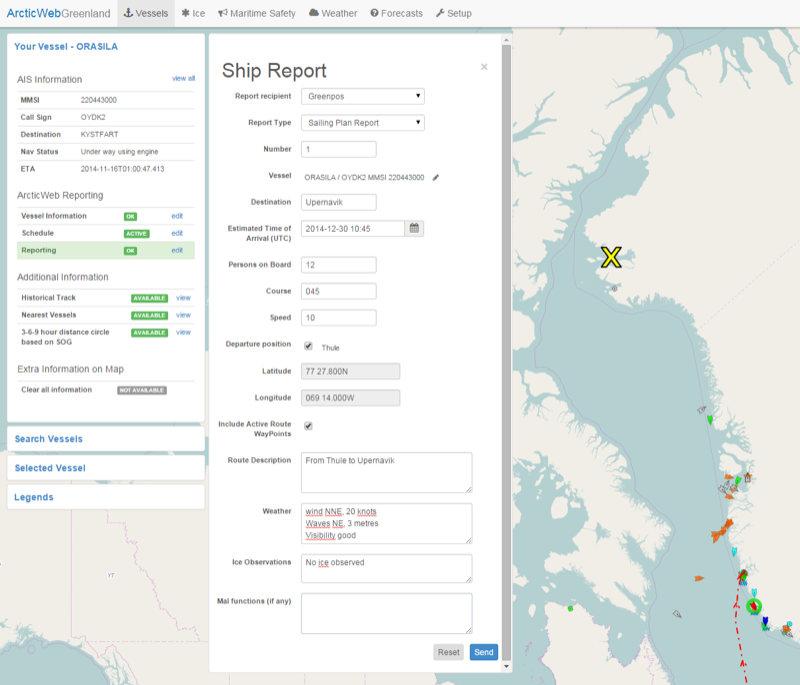
Vessel Information
All information available via AIS is collected automatically in the AIS Information window. Additional information relevant in the Arctic area, for Search and Rescue and assistance is given and shared in the Vessel Information window, e.g. Ice class, maximum speed, Maximum Rescue capacity, vessel equipped with Helipad, communication capabilities, etc.

Vessels schedule is entered, uploaded and kept up to date in the Schedule menu.
Enter location, position (filled in automatically for ports in Greenland), arrival and departure times, crew and passengers on board at departure and if doctor or medical personnel is onboard.
Positions are entered in following format: DD MM.MMMN ; DDD MM.MMMW
Detailed routes between a location and the following location may be either uploaded by clicking Upload route or created manually in the system by clicking Create route.
Schedules and routes are shared with other vessels and authorities enabling coordinated passage and for resource planning, e.g. rescue resources.
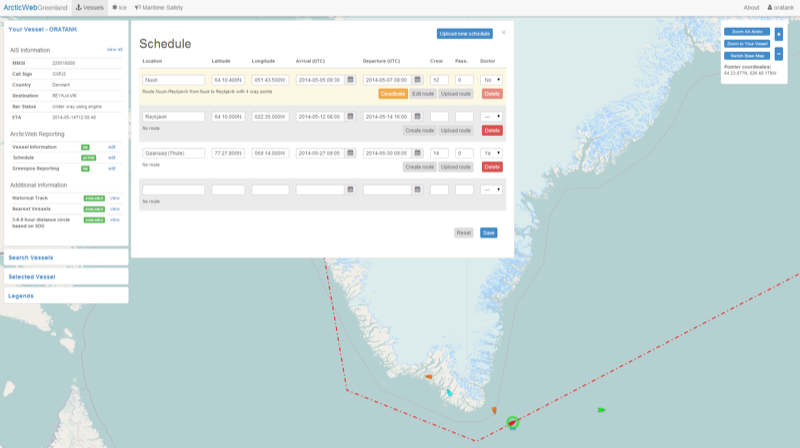
It is possible to upload schedule from an Excel sheet in following format: 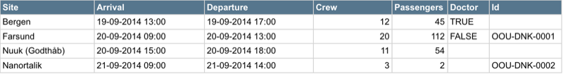
Certain restrictions and comments regarding this format:
As of now, only the “old” Excel format (.xls) is supported. The “new” format (.xlsx) may be supported in a future version.
The columns “Site”, “Arrival” and “Departure” (and their corresponding headers) are mandatory. The columns “Crew”, “Passengers”, “Doctor” and “Id” may be omitted. The case (upper, lower) is irrelevant, and so is the order of the columns.
The system will try to locate the coordinates of the sites automatically. If this is not possible, you are required to enter them manually or choose another site.
All times are in UTC, in the format shown above (dd-mm-yyyy hh:mm).
If an Id value is not present, the system will automatically generate one. The advantage of using your own Ids is that if you upload a new schedule containing lines with the same Ids, those lines will replace the existing ones in the system. This is convenient for making batch schedule adjustments.
“New” lines (i.e. without Ids) will be required to have an arrival (and departure) date no earlier than the latest departure date in the current schedule.
When uploading a schedule, the data from the Excel sheet is not saved until you explicitly press the “Save” button, so you will be able to review it and make adjustments.
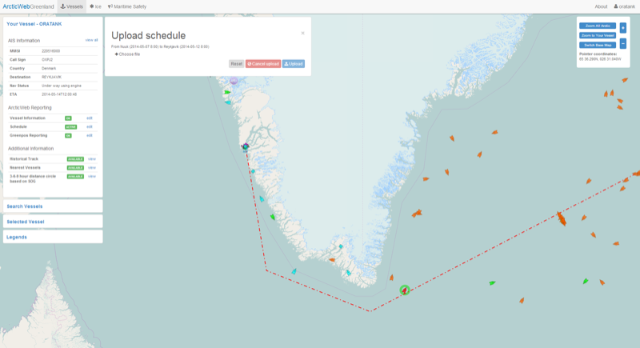
Routes may be uploaded to ArcticWeb and used by own vessel, e.g. when assessing Maritime Safety Information and when navigating in ice. At the same time routes in ArcticWeb are shared with other ships and authorities for planning and improved situation awareness.
Routes may be exported from ships ECDIS systems on a USB-stick.
The following ECDIS systems are currently known to be supported:
Transas Navi-Sailor 4000
Transas Navi-Sailor 4000 MDF
Sperry Marine “VisionMaster FT”
SAM ChartPilot 1100
Support for the following ECDIS systems are to be added in the near future:
FURUNO FEA 2107
Note: If ECDIS system on board is not supported by ArcticWeb, then please let us know (Mads Bentzen Billesø, Danish Maritime Authority, mcb@dma.dk ).

When route is uploaded it is possible to edit Waypoints and other route details by clicking Edit route.
By clicking Create route it is possible to create and save a route in ArcticWeb. This functionality may be used if it is not possible to export route from ECDIS system and import into ArcticWeb.
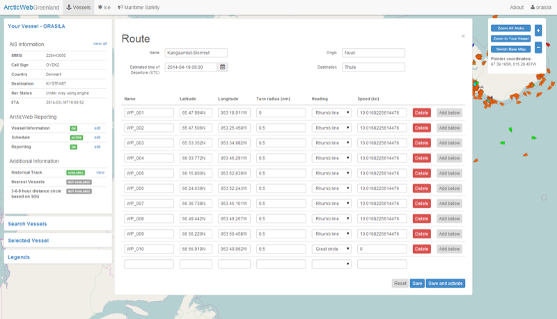
The active route of own vessel is shown at all times on chart page (red route).
Other vessels active route can be seen by selecting the vessel and click the Route view link in the Selected Vessel view. The active route of other vessels is dark green.

Own and other vessels planned routes can be viewed on chart by selecting the vessel and click on the Schedule view link in the Selected Vessel view. Select the routes to view and choose View on Map.
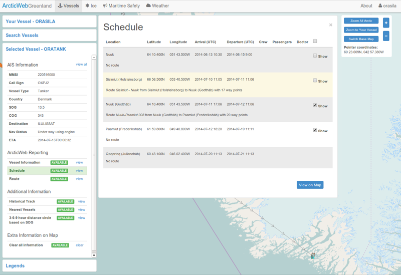
Own vessels planned route are orange. Other vessels planned routes are light green. If a detailed route is not available then a line is drawn connecting the departure and arrival locations from the Schedule. The line is black for own vessels and gray for other vessels.
Routes are only available from vessels participating in ArcticWeb. This is indicated by the letters AW below the target symbol.

By clicking the Weather tab in the top menu, the Weather window is opened on the left.
Weather forecasts and warnings will be available here.
The forecast districts will also be outlines on the map. Districts with one or more warnings are highlighted with red.
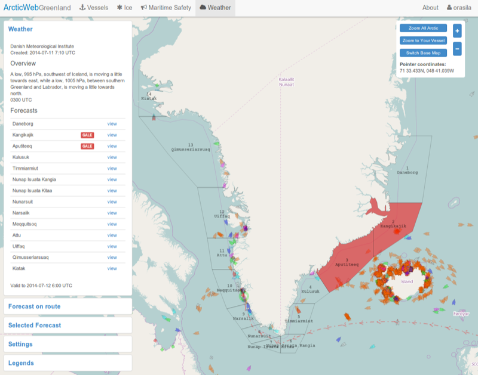
Click a view link in the Weather window or click on a district on the map to see a detailed weather forecast and warnings for that district.

After creation/uploading and activation of a route it is possible to get a weather forecast (METOC information) on the route. The forecast consists of wind, waves, current and tidal level values and these values can be expected up to 45 hours from current time.
Click on the Forecast on route window and thereafter on the Active route view link.
It is also possible to view forecast on routes of other vessels. Select the routes using the functionality in the Vessel tab and thereafter navigate back to the Weather tab, choose Forecast on route and thereafter the Selected routes view link.
The view link will only be AVAILABLE if you have an active route / have selected routes and route(s) in question are scheduled within current time to 45 hours ahead.
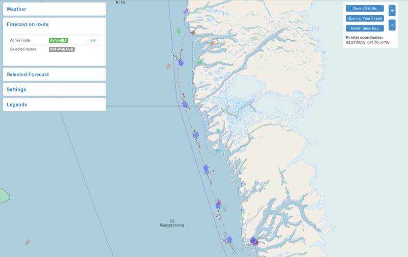
Details for specific forecast points are shown when click the symbols on the map. They are also displayed on the map when zooming in.
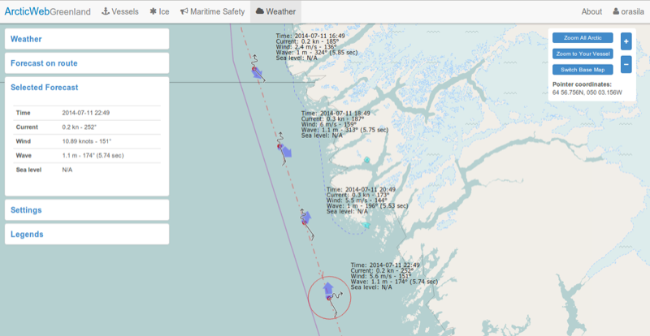
ArcticWeb provides forecast data for several metrics such as ice concentration, ocean currents, ice accretion risk etc. The Forecasts tab in the top menu opens the window for serving these data.
The Forecasts page contains four windows; one for wave related forecasts, one for ice related forecasts, one for ocean current related forecasts and a legend window explaining how data is visualized. All forecast windows show the most recent forecasts available from the various forecast providers, sorted by the name of the area. When a forecast is selected, a slider appears to conveniently move forward and backwards in time in order to see how the forecast predicts the weather over time. The forecasts themselves are represented as squares or arrows on the map, typically with an interval of 0.4 degrees whenever data in the area is available, encased in a frame to show the area the forecast covers.
Note that some forecasts might contain lots of information, resulting in an increased amount of data to download (and thus bandwidth usage) and slower graphical updates in browsers on older systems.
Wave forecasts provides three metrics: significant wave height, mean wave period and mean wave direction. Forecast locations are shown as arrows, and the directions of these arrows indicate the mean wave direction. The color of the arrow indicates the significant wave height (see the legend window for more information) and the length of the arrows will increase with the mean wave period.
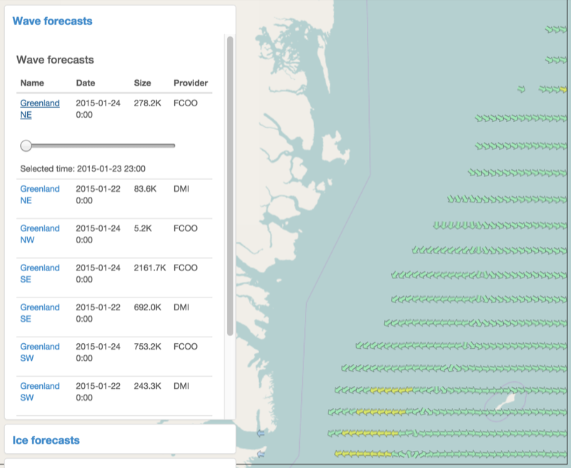
Ice forecasts are split up into different relevant metrics: ice concentration, ice thickness, ice speed and ice accretion risk. Some providers may not provide all of these data.
Ice concentration, thickness and accretion risk are shown as squares on the map, with the color representing the level of concentration/thickness/risk (again, see the legend window). Ice speed is shown as arrows, the direction indicated by the arrow rotation and the speed indicated by the color.
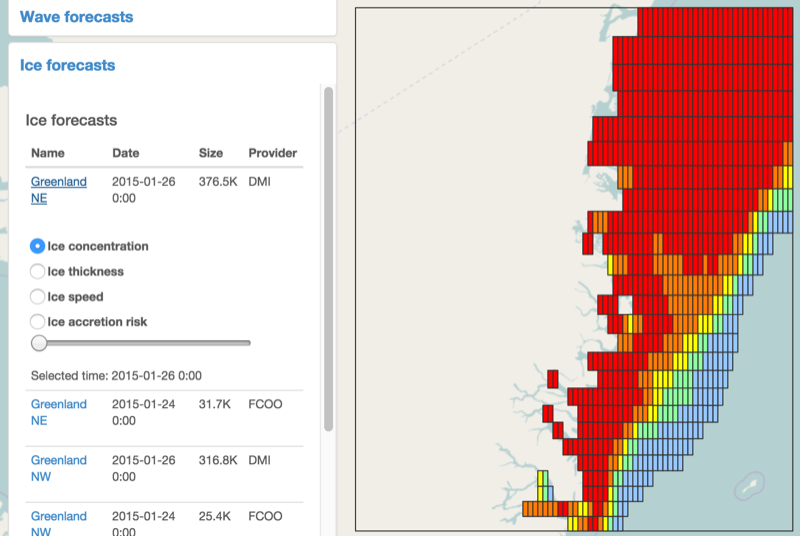
Ocean current forecasts are shown using arrows, just like ice speed. The direction of the arrow shows the current direction and the color of the arrow shows the current speed.
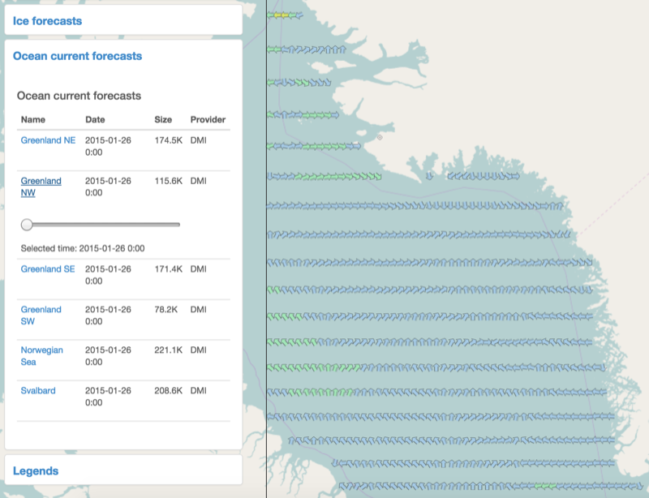
ArcticWeb provides AIS data from vessels in the whole Arctic region - vessels being above latitude 57 degrees. Displaying data from the whole Arctic region however results in a high data usage. The ArcticWeb platform therefore provides functionality to the users, which can be used select the geographical areas from which to receive data. This is done by configuring one or more geographical areas, called Areas of Interest.
You have no Areas of Interest by default, in which case vessels are instead shown within a circle around Greenland.
Configuration of Areas of Interest allows you to see data in a fine-grained matter, hence exactly the vessels you have interest in.

NB. Configurations to Areas of Interest made beneath latitude 57 degrees will not be applied.
Create a new area of interest by clicking the New Area button. Draw on or more areas on the map, from where to fetch data. Each area is drawn by pushing the left mouse button dragging and releasing the button again. When finished drawing, then click the done button.
Below is shown an Area of Interest for Norwegian data consisting of several drawn areas.
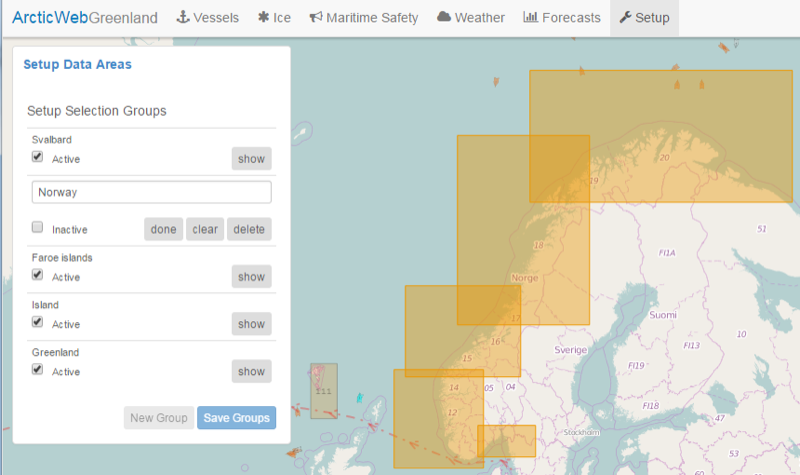
If you want to retrieve data from the new area of interest, then put a checkmark to activate the area of interest and click Save Groups.

You may edit any existing area of interest by clicking the show button. You will then have the options to:
Change the logical name of the Area of Interest, e.g. Norway
Delete – deletes the entire Area of Interest.
Clear – clears the areas/squares of the Area of Interest.
Done – exit edit-mode.
Activate/Inactivate – activates or inactivates the Area of Interest. This will have effect on the geographical areas from where to load data and thereby also on your data usage.
Before any changes made in edit-mode are applied, you have to save your work by clicking the “Save Groups” button.